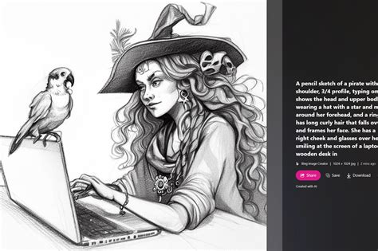
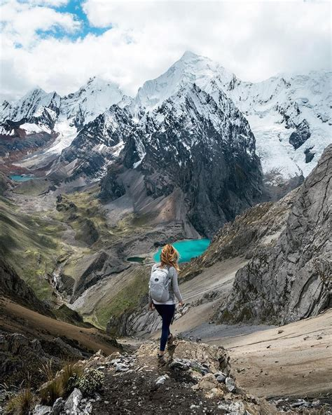

I'm AISHAT MIKAIL,a passionate fullstack Developer,Currently a corp member...passion-driven and goal-oriented individual with a strong desire to make a positive impact in the world through technology. I love playing football,traveling,riding bicycle,playing table-tennis,learning new things and listening to motivational speeches.
I learned how to save images on my folder in my code editor,and also how to create an head tags.we have six head tag in our HTML....from h1 to h6.h1 has the biggest font size and h6 has the smallest font size.

I am Biochemist and have passion for tech
I love playing football because it is fun and it helps me to keep fit.
I love travelling because it helps me to learn new things and meet new people.
I love riding bicycle because it is fun and it helps me to keep fit.